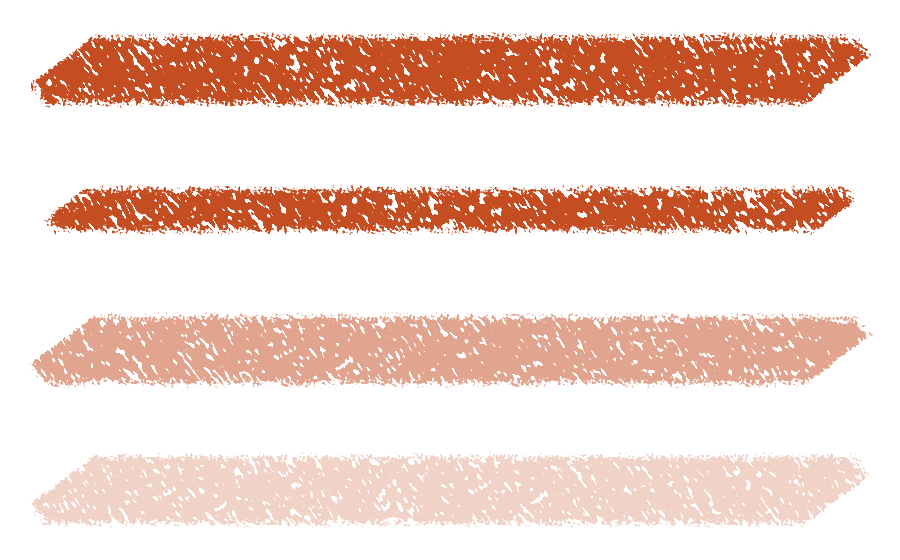

Palette knife: measured overlap defect, physical references and a paint model →
New: pen orientation, stroke direction and corrected knife scrapes →
Brush behavior and the Sketchpad engine
Sketchpad needs richer material behavior, clearer opacity semantics, and a more expressive stroke model. Its current brush shaders can vary a coverage mask, but the active path has no within-stroke paint accumulation, no per-pixel color output, and no persistent paint state. Adding more noise to that mask cannot reproduce the full range of graphite, charcoal, loaded paint, or blending brushes.
The strongest near-term direction is to retain the reliable continuous drawing path for hard round and marker, then add explicit capabilities for textured deposition, stable variation, and opaque color texture. This report distinguishes documented behavior in established applications, findings in Sketchpad’s implementation, and proposed changes. The accompanying knife revision addresses a specific opacity defect; it does not complete that broader engine work.
1. Brush quality starts with the mark
A useful brush has a recognizable response across a whole drawing task: initial contact, thin lines, broad shading, corners, overlapping passes, and lift. A convincing large swatch does not establish that the same brush will work for a small contour or a controlled tonal transition. Likewise, a numerically correct mask can still produce an unpleasant tool.
For Sketchpad, the target should be a small set of dependable materials with distinct behavior. The following are proposed acceptance criteria, rather than claims that one commercial preset is the universal definition of a material.
| Material | Useful behavior | Failure to avoid |
|---|---|---|
| Hard round | A clean silhouette, opaque body when requested, controlled pressure response and predictable overlap. | Accidental texture, wobbly width, or a stroke changing after lift. |
| Graphite pencil | A fine connected line; pressure that changes deposition; a convincing transition to broad tilted shading. | A uniformly gray tube, isolated pixel noise, or a brush that only looks good at large sizes. |
| Alcohol marker | A deliberate chisel shape and controllable translucent passes, with clear behavior at overlap and at lift. | Arbitrary rotation or excessive texture that destroys the accepted marker behavior. |
| Charcoal | Broken edges, coherent grain, useful dark masses, and gentle pressure control for lighter passages. | A fuzzy airbrush perimeter or a field of disconnected black dots. |
| Loaded palette knife | Opaque paint where deposited, an angular contact, localized scraping, and eventually shaded ridges or paint thickness. | Making the entire stroke translucent to reveal its texture. |
| Blender / smudge | Actual movement or mixing of existing color, with an explicit amount of newly added paint. | A transparent colored overlay presented as physical blending. |
Physical examples help define these targets. Gamblin describes different knives for fine lines, thick deposits, large-area blocking and smoothing. David Revoy’s charcoal-pencil work emphasizes subtle paper grain and a useful pressure curve. These are references for evaluating marks, not formulas to copy indiscriminately. [1] [2]
The graphite, charcoal and knife presets should therefore be reviewed independently. Making all three share the same paper pattern with different opacity multipliers gives them family resemblance, but does not establish their material identity. Their contact shape, deposition response, scale behavior and overlap rules need separate decisions.
2. What established brush engines separate
Procreate separates stroke spacing and stabilization from tip shape, grain behavior, rendering and input dynamics. Its shape controls distinguish following the drawing direction, random orientation for each impression, and a randomized starting orientation. Grain can move with the brush or remain fixed behind the stroke. This is a useful functional decomposition; the public handbook does not establish the details or performance of its internal GPU implementation. [3]
Sketchbook distinguishes Standard, Marker, Smudge, Synthetic Paint and Natural Blend behavior. Synthetic Paint can blend existing canvas colors while controlling the initial paint load, and Natural Blend can be applied without replacing the existing stroke shape. The key lesson is that shape and material behavior are separate concerns. [4] [5]
Krita offers separate opacity/flow behavior, texture modes, input sensors, and a color-smudge engine. Its documentation explicitly distinguishes texture that changes transparency from lightness and gradient mapping that change color. This directly addresses the conflict between wanting solid paint and visible texture. [6] [7]
MyPaint’s public brush definitions expose distance-based and time-based impression density, pressure, direction, speed, random input and barrel rotation. They also account for the nonlinear result of overlapping translucent impressions. This is an inspectable example of brush behavior being driven by a stroke model rather than only by the final pixel shader. [8]
Rebelle’s oil/acrylic controls distinguish loading, oiliness, stroke length, paint/mix/blend modes, and impasto depth and gloss. These are separate material effects. A static alpha texture cannot stand in for the whole set, although a simpler application can deliberately implement a smaller subset. The cited reference is the Rebelle 8 manual. [9]
The recommendation is to borrow these separations, not their complete settings panels. Shader authors need a sound contract; artists need well-tuned presets and a small set of meaningful controls. Exposing dozens of parameters before their interaction is understood would transfer unfinished engineering to the artist.
3. Coverage, opacity, flow and paint load
Four different quantities are currently easy to confuse. Coverage describes where the tool contacts the surface. Stroke opacity limits the contribution of the completed contact. Flow describes deposition during that contact. Paint load is a material reservoir that can diminish or mix over time. A low-coverage texture does not become fully opaque simply because the global opacity slider is set to one.
Krita defines opacity at the stroke level and flow at the individual impression level, with Wash and Build-up modes changing how opacity is applied. MyPaint’s integration guide also discusses opacity normalization and the alternative of a maximum-alpha stroke layer. The terminology differs between applications, so Sketchpad should document its own behavior precisely. [6] [10]
Interactive overlap model
These swatches compare three simplified equations at one fully covered pixel. “Passes” means repeated deposits within one contact, not device events. The example illustrates semantics; it does not simulate a textured brush, wet paint, or a commercial application.
Maximum coverage
O × f
Build-up with stroke ceiling
O × (1 − (1 − f)ⁿ)
Direct repeated deposition
1 − (1 − O × f)ⁿ
Sketchpad’s active continuous GPU path resembles the first model: each new contribution takes the maximum of the existing mask and the incoming coverage. Retracing a region can improve its coverage if the new contact is stronger, but repeated identical coverage does not accumulate. Separate completed strokes still composite over one another. This is a valid behavior for some tools; using it for every material restricts what the library can express.
There is already an optical-density accumulation mode in src/stroke.rs. However, GpuResidentRoundStroke::begin_internal rejects that mode, and the application starts the active GPU stroke with flow fixed at one. The missing work is integration and a deposition model suitable for the GPU path, rather than inventing the basic opacity math again. [C1] [C2]
Simply replacing maximum blending with additive blending would introduce a serious new problem: overlapping continuous segments would deposit more paint when input arrives more frequently. A sound implementation must integrate deposition over controlled distance or time, rather than treating each operating-system event as an independent paint stamp. A stationary airbrush may intentionally accumulate with time; a pencil should not become darker because a device reports more stationary samples.
4. Texture has several independent jobs
Surface grain, tip structure and paint appearance
A surface texture belongs to the document: it should remain stable while the canvas pans, zooms or reallocates tiles. Tip structure belongs to the tool and can rotate, deform or vary between impressions. Paint appearance can include color variation, highlights and shadows even where the paint remains fully opaque. These coordinate systems and outputs should be independent.
Krita’s texture documentation distinguishes alpha-affecting texture modes from color-affecting lightness and gradient maps. Its heightmap-bristle tutorial demonstrates separating contact coverage from a lightness map, including using pressure to bring more of a structured tip into contact. This provides a practical intermediate target before implementing full three-dimensional paint simulation. [7] [11]
Sketchpad currently supplies one shared paper resource and a single coverage output. That makes it straightforward to cut holes into paint, but impossible for a package to return a lighter ridge next to a darker ridge while preserving alpha at one. This limitation explains why “more texture” repeatedly turns into either weaker paint or more holes.
The immediate knife correction uses opaque coverage interrupted by localized scraping. Its remaining limitation is explicit: those scrapes expose the underlying surface. Convincing ridged solid paint requires at least independent color/lightness output; actual thickness and relighting require an additional material representation. Rebelle’s distinct impasto and gloss controls illustrate the latter category, rather than a feature that can be replicated by an alpha multiplier. [9]
Random rotation is a control, not a material model
Krita exposes random input per impression and per stroke, while Photoshop documents direction, initial direction, pen tilt and stylus rotation as distinct controls. These choices produce different marks. Rotating a circular uniform tip has no visible effect; rotating an elongated knife by a completely new angle every sample can destroy its deliberate contact shape. [12] [13]
The proposed contract should provide a stable stroke seed, cumulative path distance, a direction frame, and an impression index when impressions are used. A shader can then derive bounded, repeatable variation. Slow changes should use correlated noise along distance; independent random choices are appropriate for individual particles or clearly separated stamps. The seed must be pinned at contact start and remain stable through tile scheduling, redraw and recovery.
For pencil, begin with subtle deposition and shape variation. For charcoal, allow more contact breakup and a small range of orientations. For a knife, preserve deliberate orientation and vary the scrape structure. Keep the accepted round and marker presets unchanged by default. This is a proposed tuning strategy, not a claim that all brushes of those material names must behave identically.
Input response and scale
Procreate distinguishes stabilization, pressure response, taper and speed-dependent behavior. MyPaint also separates multiple speed signals and impression density based on either the base or current radius. These systems show why a single pressure multiplier cannot describe every aspect of a brush. [3] [8]
Sketchpad should first measure real pressure and tilt traces, then tune per-material response. Input normalization, smoothing and material response are different stages. Heavy smoothing can suppress useful detail, while excessive width response can make a pencil difficult to control. Fine tips also need filtered texture: a groove narrower than the output pixel should not turn into unstable isolated holes.
5. Current implementation audit
The audit concerns the active continuous GPU and shader-package path. The repository also contains older brush implementations and additional accumulation machinery. Their presence does not imply that every capability is available to the brushes selected in the current application.
| Capability | Current evidence | Consequence |
|---|---|---|
| Contact geometry | Continuous variable-width capsules and swept chisel shapes. | A good foundation for coherent round and blade strokes. General sampled or multi-tip shapes need an additional representation. |
| Pressure and tilt | Endpoint pressure/tilt in the shader input; fixed material response formulas. | Basic dynamics exist. There is no general author-controlled response mapping in the package contract. |
| Mouse orientation | The media helper falls back to direction (0.8, 0.6). | Textured non-round tools tend toward one consistent angle when tilt is absent. |
| Stroke variation | Coordinate noise and paper sampling; no seed, cumulative distance or elapsed time in the shader ABI. | No host-supported stable per-stroke variation, load depletion, or distance-normalized dynamics. |
| Deposition | Maximum coverage; optical-density flow rejected by the active resident path. | Identical overlap within one contact cannot accumulate paint. |
| Appearance | Shader returns one scalar coverage value. Host applies one selected color. | Opaque lightness texture and multi-colored paint are unavailable. |
| Surface interaction | No underlying layer sampling or persistent simulation state exposed to packages. | No true smudge, paint pickup or wet mixing. |
| Resources | A shared 512×512 paper texture and fixed bindings. | Packages cannot supply their own image-tip library, grain resources or material channels. |
| History and reload | Active package/pipeline pinned through contact; exact pixel mirror/history integration. | Useful guarantees to preserve when broadening the renderer. |
Evidence: shader inputs and helpers [C3], CPU material reference [C4], package contract [C5], maximum-mask blending [C6], and history/reload contract [C7]. These links pin the audited baseline before the knife correction.
Shader extensibility is still useful. It removes the need to rebuild the application for each coverage formula and preserves efficient GPU execution. Its present limitation is the narrow input/output contract, not the fact that the extension language is WGSL. A richer host can continue to support shader-authored brushes.
6. Palette knife: measured opacity correction
The previous knife multiplied its entire interior by paper and pressure factors. In the full-opacity, full-pressure native test, 0 of 5,280 sampled interior pixels reached alpha 1. The revised formula makes deposited paint opaque and confines lower coverage to broken edges and short scraped grooves. Pressure continues to affect contact size and scrape behavior.

In the revised full-pressure, full-opacity row, 4,607 of 5,280 sampled interior pixels reached alpha 1, while 489 fell below alpha 0.25 in scraped regions. The same test checks that lower opacity settings remain a ceiling. These are measurements of this particular test path and sampling band, not an overall artistic quality score.
The first texture trial produced overly long diagonal cuts and was rejected during visual review. Shortening those features retained an opaque body while producing finer localized texture. Subpixel tips suppress unresolved internal grooves, and the CPU/GPU comparison is checked at both ordinary and subpixel radii.
This is deliberately a dry, loaded knife correction. It does not add smearing, mixed pigment, shaded impasto or new rotation dynamics. The comparison makes that remaining gap visible instead of labeling a corrected alpha mask as a complete natural-media model.
7. Implementation direction
Recommendation: add explicit material capabilities around the existing renderer. Keep the continuous coverage route for brushes that benefit from it. Add controlled deposition and richer outputs as separate capabilities, so an ordinary round brush does not pay the cost of wet-paint simulation.
- Calibrated input
- Stable stroke state
- Contact / impressions
- Material evaluation
- Compositing
- Exact history
First: variation and opaque appearance
Introduce a versioned shader contract with a pinned seed, cumulative distance, a stable orientation frame and explicit material capabilities. Keep version-one packages working unchanged. Provide documented helpers for bounded random values and smoothly varying noise, with deterministic test vectors. The host should handle zero-length contact and direction changes without letting an arbitrary random angle replace a meaningful pen orientation.
Add independent coverage and color/lightness output for brushes that need it. This requires deliberate compositor semantics: independently taking the maximum of coverage and unrelated color channels can combine values from different impressions into an invalid result. The implementation should associate appearance with the chosen contribution, or accumulate color and weight under a defined blend model. The current exact-pixel history remains the document authority.
This stage would let a knife carry tonal ridges without making the entire body transparent, and let a charcoal or pencil vary its deposited character between strokes. These are achievable improvements before introducing fluid simulation. Brush bounds must also remain conservative when shapes rotate, scatter or distort; otherwise the renderer will clip the very variation being added.
Second: controlled deposition and tip resources
Add an optional build-up path with distance-normalized impressions or a well-defined continuous deposition integral. Reuse the existing optical-density math where appropriate, but validate it against actual repeated source-over deposition and the desired stroke ceiling. Test sample subdivision, pressure variation, stationary contact and long strokes before exposing the capability as a general preset option.
Support authored tip and grain resources with explicit sampling and scale rules. A shader should be able to select a captured or procedural tip, combine it with surface grain, and vary its orientation without transforming the document’s paper underneath it. Resource versions must remain pinned during active contact, just as package code is today.
RealBrush is a useful historical research reference here: it synthesized marks and their interactions from captured physical-media examples, demonstrating an alternative to relying exclusively on procedural rules or simulation. That motivates building a small reference corpus of real marks. It does not establish that its full method is the best fit for this application or Apollo’s performance budget. [14]
Third: pickup, blending and paint state
Krita’s smudge engine separates the amount of newly added color from how existing color is carried or sampled. Sketchbook likewise has specific blending brush types. A credible blender therefore needs access to canvas color and explicit interaction semantics, rather than another noise function. [15] [5]
A first implementation could use controlled local color pickup with a limited brush reservoir. It must define whether pickup reads the active layer, visible composite, original stroke background, or live result. Sampling and writing the same texture without an ordered strategy is unsafe; overlapping impressions also require a deterministic order. These questions affect visual behavior, performance and undo, so they belong in the material contract.
Height, wetness, pigment transport and relighting should follow only if that smaller model proves insufficient for the intended brushes. They introduce additional document channels, storage and compositing costs. There is no evidence from this review that a full fluid solver is necessary to make the initial pencil, charcoal and knife substantially better.
Preset development alongside engine work
Ship a restrained set of artist-facing controls: size, opacity and the material-specific adjustment that actually matters, such as flow, loading or texture amount. Keep advanced mappings and resources in authoring tools. Each shipped preset should have a short statement of intended use and a corresponding drawing test; names such as “pencil” should promise a usable behavior, not merely a shader identifier.
Do not repeatedly retune the accepted marker and hard round while exploring dry media. Preserve their reference images and numeric coverage checks. Improvements should be judged against the task they address, with exact history and large-stroke reliability remaining release requirements.
8. Physical behavior, mixing and simulation
Brush shape, paint transport and rendered appearance are different modeling problems. Research supports several useful levels of approximation; it does not identify a universal solver that is simultaneously the most expressive, easiest to control and cheapest to run. The following methods inform the proposed design, rather than constituting a dependency selection.
Bristles and paint pickup
DiVerdi, Krishnaswamy and Hadap’s 2010 bristle system separates brush dynamics from deposition. Its pickup buffer and fresh-paint reservoir deplete independently, allowing a larger amount of picked-up paint to leave a longer streak. The authors also distinguish a canvas with stored paint quantity from one treated as an unlimited paint source. These distinctions matter even in a simpler two-dimensional smudge engine. [16, §4.2]
The same paper reports deliberately omitting bristle-to-bristle collision after visual experiments, and dropping a plastic-deformation behavior that created confusing reset decisions for artists. It also decouples simulation steps from the more frequent impressions needed for smooth strokes. The useful design lesson is to evaluate resulting marks and interaction, and to give each subsystem its own appropriate update rate. [16, §§3.3–3.5, 4.1]
Detailed simulation versus a surface model
Wetbrush uses a hybrid representation: particles near the brush and a density field farther away, with GPU computation for bristle-scale paint interaction. The author’s project description establishes that detailed simulation is feasible, but its CUDA implementation is not a portable drop-in for Sketchpad’s integrated-GPU target. This report uses the project’s abstract for the architectural comparison; it does not reproduce a Wetbrush benchmark. [17]
Stuyck and colleagues’ mobile oil-painting system takes another approach: a 2.5D height field, adapted shallow-water dynamics and stacked pigment layers. It sacrifices overhangs and full three-dimensional folds to preserve lateral detail and mobile performance. At 1024×768 simulation resolution, its implementation reports about 45 frames per second on an iPad Air 2; that is a historical result for that implementation, not a prediction for Apollo. [18, §§3, 8.2]
The 2026 Dripping Thin Films paper models fluid height separately from pigment transport and exposes parameters for drip shape. Its measured solver step takes 3.1 ms at 4096² on an RTX 3080 Ti Laptop GPU; a solver step is not the whole painting frame. The paper also documents stability limits and uses linear pigment mixing, showing that convincing fluid motion does not automatically supply convincing pigment color. [19, §§4–7]
Recommendation: reserve a stateful surface path in the architecture, but establish local pickup and a modest height representation before choosing a fluid solver. A dry knife needs opaque ridges and coherent scraping immediately. Water spreading, drying and gravity are additional behaviors that should earn their cost through drawing tasks.
Pigment mixing is an independent operator
Sochorová and Jamriška’s Practical Pigment Mixing converts RGB into a latent representation containing four pigment concentrations and three residual components, mixes there, then converts back to RGB. This permits pigment-like mixtures while retaining arbitrary RGB input. Its stated scope is homogeneous mixing of opaque paints; it does not implement faithful translucent-layer glazing. The paper’s CPU painting experiment reports a median 2.3× overhead compared with ordinary RGB mixing, so improved color behavior should not be described as free. [20, §§3–5]
The associated Mixbox repository includes Rust and shader integrations. Its published license is CC BY-NC 4.0, with commercial licensing offered separately. It is a concrete candidate to evaluate, not an adopted dependency or an assumed fit for distribution. [21]
For Sketchpad, color mixing should be a named material operation. Keep ordinary layer compositing predictable; let a wet-paint brush opt into a pigment model where paint actually mixes. A blend operator determines the mixture’s color, a transport model determines where paint moves, and coverage determines where the tool contributes. Changing one does not replace the others.
9. A programmable brush contract
Proposed architecture, not implemented API. The engine should support authored code for contact, deposition, color and state evolution. A package should declare what it reads, what it changes and how it accumulates. The host should own scheduling, document access, persistence and resource accounting. This gives authors substantial freedom without requiring each brush to reimplement reliable strokes and undo.
Three execution families under one package system
| Family | Author controls | Host responsibility | Initial uses |
|---|---|---|---|
| Continuous contact | Shape, coverage, associated color and local appearance along a swept contact. | Conservative bounds, stable contribution selection, stroke ceiling and tile updates. | Hard round, chisel marker, an opaque textured knife. |
| Controlled deposition | Impression shape, resource selection, scatter, rotation, deposition strength and color. | Canonical spacing or time integration, ordered accumulation and persistent distance remainder. | Graphite, charcoal, bristle impressions, airbrush and spray. |
| Stateful material | Pickup/deposit rules, reservoir evolution, optional surface-channel evolution and shading. | Ordered source reads, bounded working regions, simulation steps and history of every changed channel. | Smudge, loaded paint, impasto and eventually flowing media. |
These are execution contracts, not three disconnected applications. They share calibrated input, versioned packages, tile storage and document transactions. A package can use a sampled tip with procedural grain, or a bristle generator with a pickup model. Capability combinations should be supported deliberately: allowing any two shader stages to connect does not by itself define physically or numerically meaningful behavior.
Inputs, outputs and resources
| Contract component | Proposed contents and rules |
|---|---|
| Stroke identity | Pinned package/resource versions, a stroke seed, normalized parameters and a defined color space. |
| Input frame | Document position, pressure, tilt and optional barrel rotation; tangent/normal; cumulative distance; elapsed time and filtered speed. Unsupported device signals have documented fallbacks. |
| Contact coordinates | Separate document/paper coordinates, tip-local coordinates and path distance. Scattering the tip must not move the paper grain. |
| Material result | Coverage plus associated paint color or lightness modification, and a declared deposition model. Optional deposited quantity, height or wetness require the corresponding state capability. |
| Read access | Declared brush resources and, for pickup, a named layer/composite source with a finite sampling neighborhood. |
| State lifetime | Separate per-contact state, tool reservoir state that can persist between contacts, and persistent surface channels. Each has explicit reset/save rules. |
| Author resources | Tip/grain images or arrays, deterministic procedural helpers, parameter schemas, reference traces and expected outputs. Dimensions, sampling, color encoding and provenance are recorded. |
The first richer contract should return independent coverage and appearance. A solid ridge can then become lighter without exposing the layer below it. Define straight versus premultiplied color at every boundary, keep zero-coverage values harmless, and distinguish material color from lighting. A brush that requests true relighting must preserve height or normals; baking a highlight into RGB cannot later behave as editable geometry.
For a continuous colored brush, choose and test a contribution rule. One initial option is to associate color with the highest-coverage contribution and resolve ties by a canonical path position. For deposition, accumulate under a documented order and blend model. Channel-wise maximum of RGBA is unsuitable: it can construct a color from unrelated impressions. No single rule should be silently substituted for another when changing brush families.
Reproducibility and ordering
Random values should derive from a stable identity such as stroke seed, canonical impression index and variation channel. Deriving them from tile number, raw event count or GPU dispatch order would make the same gesture change under batching. Canonical resampling must carry its spacing remainder across input and storage chunks, including the beginning and end of long contacts.
Sampling invariance has a precise limit: two traces must describe the same reconstructed path and dynamics. A trace that discards a pressure peak cannot be expected to match one that preserves it. Test equivalent subdivision and scheduling separately from intentionally different movement, timing or pressure. Fixed seeds are valuable for debugging, but do not guarantee bit-identical floating-point simulation across GPU implementations.
Pickup must define whether each impression sees the initial stroke background or the live result of preceding impressions. A shader should receive a stable source view for its step; the host can use separate read/write regions or ordered passes and swap them. WGSL workgroup barriers are not a global synchronization mechanism for unrelated workgroups. Cross-region dependencies need host-level scheduling and defined visibility. [22]
Neighborhood reads also affect tile boundaries. A smudge footprint or diffusion kernel requires a halo around its write region. The bounds contract must include that neighborhood and any displacement; otherwise a brush can look correct at the middle of a tile and fail at its edge. Stateful work should expand and retire those regions explicitly, including movement after the stylus leaves an area.
History, saving and state after lift
Keep exact committed document deltas or snapshots as undo authority. Stroke descriptions remain useful for editing, profiling and reproducible experiments, but replay alone is insufficient when a shader changes or a wet stroke depends on evolving paint underneath. History must cover every material channel that influences future painting, not just displayed RGBA.
For the first pickup implementation, finish contact as one transaction and pin the brush code throughout it. If tool loading persists between contacts, decide whether undo also restores the reservoir; restoring it is the most predictable initial policy. Saving should capture that state if reopening is expected to resume with a dirty brush.
Post-lift simulation needs a separate product decision. A practical first policy is explicit settling or drying commands, with bounded simulation steps inside a transaction. Continuous automatic drying could later use a recorded simulation clock and checkpointed batches, but undo must restore both paint state and simulation state so the removed stroke does not immediately reappear. Storage chunks and simulation batches must remain invisible to the artist’s stroke-level undo.
Authoring experience and compatibility
A package should include a small example shader, parameter descriptions and a reference sheet that the author can regenerate. Authoring tools can show compilation errors, active capabilities and approximate memory costs. The painting workspace should show only the preset’s useful controls. A powerful authoring API does not require a large permanent settings panel.
Preserve version-one coverage packages. Validate new packages before activation and pin accepted pipelines/resources through contact. A failed reload should retain the last working version. Shader validation cannot establish artistic quality or guarantee cheap execution, so expensive capabilities need separately measured workloads and explicit supported-device behavior.
Preset blending also needs a concrete meaning. Combining two coverage shapes, mixing two paint colors and running one material after another are distinct operations. Start with named composition operators and a few supported combinations, then expand from real author needs. This is more extensible than a growing list of hardcoded preset exceptions because the underlying contracts remain inspectable.
10. Performance and memory
Shader execution is appropriate for parallel pixel work, but shader authorship is not inherently faster than a built-in brush. A broad contact can become limited by memory bandwidth, repeated overdraw, neighborhood reads or synchronization. A simulation can require several passes after the deposition shader finishes. The performance claim to pursue is predictable latency for specified materials and canvas sizes on Atlas and Apollo.
Storage scale
The following are calculated raw storage sizes for a fully populated 4096×4096 surface. They exclude alignment, tile metadata, staging, cached presentation, history and duplicated working buffers. They are capacity illustrations, not measurements of current Sketchpad allocations.
| Representation | Bytes per pixel | One full surface | Two working copies |
|---|---|---|---|
| RGBA8 color | 4 | 64 MiB | 128 MiB |
| RGBA16F color | 8 | 128 MiB | 256 MiB |
| RGBA32F color | 16 | 256 MiB | 512 MiB |
| One R16F channel | 2 | 32 MiB | 64 MiB |
| Four R16F channels | 8 | 128 MiB | 256 MiB |
For example, two full RGBA16F buffers plus four additional R16F channels with two copies consume 512 MiB before history and other document layers. The proposed solution is optional channels and sparse working regions, with a bounded neighborhood around active paint. Sparse allocation helps localized work; a stroke covering most of a canvas eventually incurs most of the full-surface cost.
Half precision is a candidate working format, not a blanket migration recommendation. Thin accumulated deposits, many repeated blends and slowly evolving state can expose quantization. Choose precision per quantity after adversarial tests, and retain the project’s exact committed-pixel guarantees. Reducing resolution for simulation must be an explicit material choice because it changes grain and transport detail.
Work scheduling and useful budgets
Keep the accepted simple brushes on their efficient route. Batch independent tile work, reuse resources and avoid readback in the contact loop. For a stateful brush, parallelize pixels within a step while respecting the order of dependent impressions. Trying to process all overlapping pickup impressions simultaneously would change their meaning.
Separate input reconstruction, deposition, simulation and display cadence. The stroke should catch up through bounded work batches, retaining all input, and long contacts should continue across storage chunks without resetting material state. If simulation falls behind, preserve the visible committed result and expose an explicit quality policy rather than dropping paint or silently changing the recipe halfway through a stroke.
The mobile oil-painting paper’s separation of simulation and render resolution is a useful precedent, but low-resolution paint is not automatically adequate for a sharp pencil. The authors report just under 19 MB for their two-pigment-layer dynamic state at their chosen resolution. That result motivates measuring compact representations; it does not establish the right format or memory budget for this engine. [18, §8.2]
Benchmark identical prepared scenes on both machines: fine contour work, repeated shading, a 512-pixel stroke covering most of the canvas, an extended smudge across several colors and a dirty-brush reload. Record input-to-visible latency, worst frame intervals, peak resident memory and work remaining after lift. Compare each new capability against the same renderer with that capability disabled. No new-engine performance measurements exist yet; this report defines the cases needed to make that decision.
11. Evaluation and release gates
The existing engineering checks are valuable: exact undo/redo, save/load, tile placement, large strokes and CPU/GPU agreement. They establish correctness of the implementation, not whether an artist enjoys the brush. A better evaluation process needs technical invariants, visual comparisons and real drawing tasks.
| Test | What to inspect | Acceptance rule |
|---|---|---|
| Opacity ladder | Opaque paint over contrasting colors at 100%, 50% and 25%; low and high pressure. | Interior reaches the intended ceiling. Deliberate holes are distinguishable from a globally weak deposit. |
| Pressure and tilt sheet | Fine lines, light-to-heavy transitions, side shading and stationary tilt changes. | Useful control over marks, without unexplained discontinuities or disappearing centers. |
| Repeated path | One pass, repeated passes without lift, then separate strokes. | Behavior matches the material’s documented accumulation mode. |
| Speed and event density | The same path with different timing and subdivisions. | Only intentionally speed/time-dependent effects change. Event batching is not an artistic input. |
| Scale | Subpixel, fine, normal and 512-pixel tips at multiple view zooms. | Coherent edges and filtered grain; no oversized brush loses its active stroke. |
| Variation and history | Different seeds, repeated rendering of one seed, undo/redo and save/load. | New strokes can vary; the same stroke stays reproducible and stored pixels remain exact. |
| Material tasks | A product contour, graphite value study, charcoal mass, marker overlap and loaded knife patch. | Artist preference and controllability improve in direct A/B comparisons. |
| Apollo performance | Input-to-visible behavior, dirty area, GPU work and memory under broad contacts. | No unmeasured claim of being faster than other apps; maintain usable behavior on the lower-power machine. |
The initial preference test should use fixed paths and settings, randomized A/B presentation, and a small set of questions: which mark looks more like the intended material, which is easier to control, and where does it fail? Follow that with a short freehand task. Synthetic traces are excellent for repeatability, but cannot substitute for the pressure range, tilt behavior and hand motion of a real tablet.
Reference capture should include isolated marks, overlaps, low-pressure strokes, edge-on contact, and different tool sizes. Use original or appropriately licensed assets, record their provenance, and avoid treating a commercial brush preview as freely reusable brush data. A single screenshot rarely reveals how the tool changes throughout a contact.
The knife revision passed the ordinary Cargo test suite, native GPU opacity study, existing media/history/save regression and release build on both Atlas and Apollo. Both machines produced identical counts in all four opacity-study rows. The legacy/package GPU mask oracle also passed on both machines, including subpixel tips. Formatting passed for the changed Rust files; the repository-wide formatting check reports pre-existing differences in unrelated GPU document files. These checks cover the knife revision, not the proposed new engine.
12. Priorities and limits of the evidence
The highest-confidence findings are direct implementation facts: the active GPU path lacks accumulating flow, shader outputs are coverage-only, and the old knife attenuated its entire deposit. The measured knife samples demonstrate the opacity defect and its correction. They do not prove that the revised knife is an ideal natural-media preset.
The main design recommendation is to implement independent appearance output, stable stroke variation, and controlled deposition, then tune a small brush set against drawing tasks. The order can be adjusted after the first artist comparison: opaque appearance may have the highest immediate value for the knife, while pressure/deposition changes may matter more for graphite.
Commercial documentation establishes available behaviors and terminology, not the vendors’ complete rendering algorithms or comparative speed. Historical research provides useful methods rather than a current product recommendation. The report therefore does not claim that copying any one engine, switching everything to stamps, adding unrestricted random rotation, or running a more complex shader will automatically solve brush quality.
The existing renderer has useful strengths: coherent strokes, sparse GPU storage and exact pixel history. The next step is to give materials the inputs, outputs and accumulation rules they need while preserving those strengths. That is a larger and more productive change than continuing to adjust a few opacity constants in each preset.
Sources and implementation references
Product documentation reviewed September 12, 2026. Undated pages are identified by publisher and title; explicit versions and publication dates are noted where available. Inline source links identify the supporting claim.
- Gamblin Artists Colors. Studio Knives. Undated. Physical knife use and mark characteristics.
- David Revoy. Krita brushes: Charcoal pencils. Artist-authored preset discussion. Paper grain and pressure tuning.
- Procreate. Brush Studio Settings. Current unversioned handbook URL. Shape, grain, stabilization and input controls.
- Sketchbook. What are brush types?. Undated. Separation of brush shape and behavior.
- Sketchbook. Blending brushes. Undated. Synthetic Paint, Smudge and Natural Blend.
- Krita Manual 5.3.0. Opacity and Flow. Stroke/impression transparency and painting modes.
- Krita Manual 5.3.0. Texture. Alpha versus color texture, offsets and strength.
- MyPaint / libmypaint contributors. brushsettings.json, master as reviewed. Input signals, impression density and opacity normalization.
- Escape Motions. Rebelle 8 Manual: Oil & Acrylic Tool Properties. Loading, interaction modes, impasto and gloss.
- MyPaint / libmypaint contributors. Using Brushlib. Integration and maximum-alpha alternative.
- Krita Manual 5.3.0. Heightmap Bristle Brush Tips. Contact thresholds and independent lightness.
- Krita Manual 5.3.0. Sensors. Per-impression/per-stroke randomness and distance/time inputs.
- Adobe. Add dynamic elements to brushes in Photoshop. Updated May 24, 2023. Direction, tilt and rotation controls; older version applicability is noted on the source.
- Jingwan Lu, Connelly Barnes, Stephen DiVerdi, Adam Finkelstein. RealBrush: Painting with Examples of Physical Media. ACM Transactions on Graphics / SIGGRAPH, 2013. Publisher/author project abstract and associated reference materials.
- Krita Manual 5.3.0. Color Smudge Brush Engine. Color rate, pickup, smearing and sampling interactions.
- Stephen DiVerdi, Aravind Krishnaswamy, Sunil Hadap. Industrial-Strength Painting with a Virtual Bristle Brush. VRST 2010, pp. 119–126. Paper hosted by Expresii; publication metadata confirmed by Adobe Research.
- Zhili Chen, Byungmoon Kim, Daichi Ito, Huamin Wang. Wetbrush: GPU-Based 3D Painting Simulation at the Bristle Level. ACM TOG / SIGGRAPH Asia 2015. Author project abstract; hybrid representation and CUDA implementation.
- Tuur Stuyck, Fang Da, Sunil Hadap, Philip Dutré. Real-Time Oil Painting on Mobile Hardware. Author manuscript. First published online September 26, 2016; Computer Graphics Forum 36(8), 2017, pp. 69–79; publisher record. Surface representation, resource and performance tradeoffs.
- Zoé Herson, Axel Paris, Élie Michel. Dripping Thin Films for Real-time Digital Painting. Computer Graphics Forum / Eurographics 2026. Solver, pigment transport, measured step cost and limitations; project and demonstration.
- Šárka Sochorová, Ondřej Jamriška. Practical Pigment Mixing for Digital Painting. ACM TOG 40(6), Article 234, December 2021. RGB/latent conversion, mixing scope and performance experiment.
- Secret Weapons. Mixbox. Repository reviewed September 12, 2026. Available integrations and published licensing terms.
- W3C. WebGPU Shading Language: Memory Model. Current specification reviewed September 12, 2026. Synchronization scope and memory semantics.
C1–C7 link directly to the relevant source files at Sketchpad commit 44e5d78 in the audit. The knife correction and palette_knife_opacity_study are in commit 51c5f14; CPU coverage and shader implementations are checked together. No commercial-app speed comparison or physical-tablet usability study was performed.